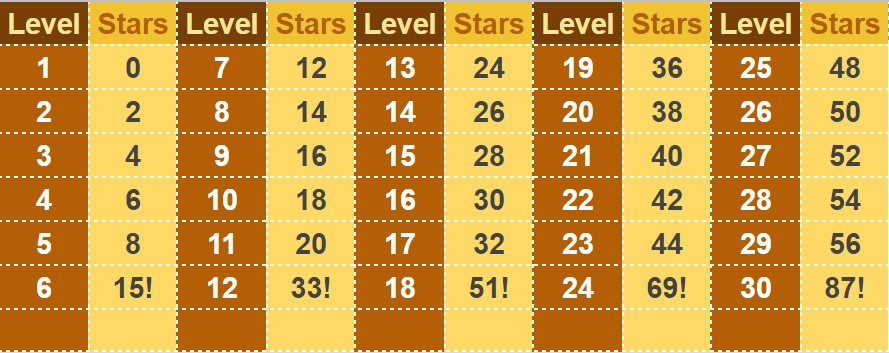

You can only get 3 clues for each level. After you've used all 3, you would be answering the next questions without any clue, of course. So use it wisely.
You can enable and disable this option on the Settings. When enabled, you have exactly 10 seconds to answer each question. Once the time is up without you answering the current question, it will proceed to the next question. Consequently, you won't earn a point for this.
These are the number of stars required to unlock each level:
